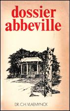
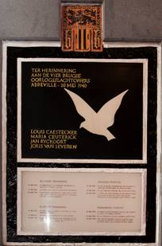

> nieuwsbrief > 2016 - nr 2
Inhoud
Hernieuwen ledenbijdrage voor 2016
De
hernieuwing van de ledenbijdragen voor 2016 verliep
traditiegetrouw vlot. Toetreden kan nog steeds, mits overboeking
ban de ledenbijdrage. Even herinneren: de minimumbijdrage bleef
ongewijzigd en bedraagt 29 €. In ruil daarvoor verzekeren we u
andermaal de stipte toezending van het nieuwe Jaarboek
Joris van Severen – het 20e al – in de
meimaand en van de vier nummers van ons kwartaalblad Nieuwsbrief
Joris van Severen. Vanaf het bedrag van 35
€ boeken we u met dank als steunend lid. Vereffening graag via
onze rekening IBAN: BE71 0001 7058 1469 – BIC: BPOTBEB1 t.n.v.
Studiecentrum Joris van Severen, Paddevijverstraat 2, 8900
Ieper.
Herdenkingen
mei 2016
Omtrent
de herdenkingsplechtigheden van dit jaar –
Eucharistieviering op 21 mei in de
Blindekenskapel te Brugge op zaterdag 21 mei en het bezoek aan het graf te Abbeville op
zondag 22 mei, ingericht door de Stichting
Joris van Severen – verwijzen we
voor alle praktische gegevens naar de folder, die u op eenvoudig
verzoek wordt toegestuurd. Daarnaast deelt de vzw Wakken Herdenkt mee dat het
heringerichte museum ‘Van Hugo Verriest tot
Joris van Severen’ op de site van
de Baliekouter te Wakken uitzonderlijk
geopend zal zijn op zondag 22 mei. Groepsbezoek
aan het museum is steeds mogelijk op afspraak.
ADVN-Mededelingen
Het
jongste nummer – 4e trimester 2015 – is voorwaar een
Verdinaso-nummer geworden! Daarin beschrijft Tom Cobbaert het verhaal van de
graven van Abbeville (dat we overnemen in deze Nieuwsbrief) en
besteedt Sophie Gyselinck aandacht
aan Leo Vingerhoedts, Dinaso, tekenaar en glazenier, waarbij zij
meteen een correctie aan bij de ondertiteling van de
illustraties bovenaan p. 120 van de Fotobiografie Joris van
Severen, die ten onrechte toegeschreven werden aan
Demuynck terwijl ze van de hand van Vingerhoedts stammen.
Geachte heer Truyens, met
interesse heb ik uw analyse van mijn gedateerde stuk over de
Nieuwe Marsrichting gelezen (in de JvS-Nieuwsbrief
4/2015). U duidt daarbij op een paradox in mijn
betoog, namelijk tussen de persoonlijke ontwikkeling van Joris
van Severen en de tactiek van het Verdinaso.
Joris van Severen heeft
inderdaad een stormachtige ideologische evolutie ondergaan
tussen 1925 en 1934, en terecht. Hij was een belezen man die
veel sprak met vrienden om zo telkens zijn gedachten te toetsen
en verder aan te scherpen. Hij bestudeerde alles aandachtig en
trachtte daarbij telkens het meest waardevolle te ontdekken. Hij
was inderdaad geen doctrinaire scherpslijper, of een
pilarenbijter. Zodoende behoorde hij telkens tot de avant-garde
en was hij met zijn inzicht zijn tijd zelfs ver vooruit.
Zo heeft zijn analyse dat het
Vlaams-nationalisme automatisch leidt tot Belgicisme (dat wil
zeggen de bestendiging van de Belgische staat in enge zin) niet
aan actualiteit ingeboet. Zowel de Volksunie als de
Nieuw-Vlaamse Alliantie zijn regeringspartijen geworden in een
Belgisch bestel en de federalisering heeft geleid tot de
inbedding van de Vlaamse natie in de Belgische staat. Hoeveel
interesse bestaat er overigens binnen de Vlaamse Beweging nog
voor Frans-Vlaanderen of voor hereniging met Nederland
bijvoorbeeld?
Van Severen hield daarentegen
als Groot-Nederlander het oog op de bal: hereniging van de
Nederlanden was en bleef het doel. Hij herleidde België
bovendien tot wat het oorspronkelijk was: de Zuidelijke
Nederlanden. Voor hem zelf was het een cultuur-historisch
inzicht, maar staatsrepressie noopte hem om dit proces van
persoonlijk inzicht naar koerswijziging van het Verdinaso te
versnellen. Aan zijn volgelingen verkocht hij het daarom
aanvankelijk als een tactiek om hen daarna te kunnen overtuigen
van zijn inzichten.
Met vriendelijke groet,
Ruud Bruijns
_____________
N.a.v.
de recensie van E Truyens in Kort Manifest
van het Jaarboek Joris van
Severen 19 (2015).
In het vorige jaarboek brachten we
postuum een bijdrage van Luc
Delafortrie rond de omstandigheden die geleid
hebben tot het einde van het Verdinaso in mei 1941. Twee
dochters van Emiel Thiers – Hilde en Lutgart
Thiers - ergerden zich niet zonder reden aan de
‘toonzetting’ van dat stuk. Aan de hand van hun toenmalige
dagboeknotities zetten ze een en ander in dat verhaal omtrent Het
einde van het Verdinaso recht.
In de aanloop tot ons jongste
colloquium gaf de pers andermaal overvloedig blijk van haar
gebrek aan historische kennis en onbegrip inzake de
persoonlijkheid van Joris van Severen en het streven van het
Verdinaso: de inhoudsloosheid van het “fascisme” als
container-begrip vierde daarbij hoogtij. Maurits
Cailliau doet in Fascisme und kein Ende?
een poging om aan dit kennistekort te verhelpen en
Van Severen en zijn beweging te situeren waar ze thuishoren – en
dit mede op basis van de plaatsbepalingen die Joris van Severen
zelf klaar en duidelijk verwoordde. Zoals een van onze auteurs
het in zijn bijdrage stelt was er in de beginperiode van het
Verdinaso ongetwijfeld enige fascinatie voor het fascisme –
evenwel nooit echt identificatie! – doch vanaf 1934 werd
ondubbelzinnig geopteerd voor een Heel-Nederlands revolutionair
conservatisme, dat zich veeleer als een tegenpool ontwikkelde
ten overstaan van het fascisme en het nationaalsocialisme.
Daarop aansluitend toont Ruud Bruijns in De
Dinaso-militie in het historisch perspectief van het
interbellum aan dat de militante politieke
vormentaal inzake actie en agitatie in die jaren allesbehalve
het kenmerk was van “rechtse” bewegingen en men veeleer dient te
spreken van een gemeenschappelijke “stijl van de jaren dertig”
die zowel “links’ als “rechts” het straatbeeld domineerde.
Dezelfde auteur brengt met zijn
bijdrage Joris van Severen en
Nederland een noodzakelijke
inleiding tot de erop volgende uitgebreide studie. Van Severens
eerste reizen naar het Noorden hadden in de eerste plaatst tot
doel zijn oude vriendschapsbanden met verbannen frontkameraden
en activisten aan te halen; eerst in latere jaren kwam Nederland
als deel van de Nederlanden in zijn blikveld.
Michiel
Wallaard wijdde zijn bachelor-scriptie als
historicus aan In de ban van Joris van Severen – Ernest
Michel, Henri Bruning en Ernst Voorhoeve. In
overleg met de auteur kan onze jaarboekredactie deze
scriptietekst enigszins ingekort, tot een al met al nog lijvige
jaarboekbijdrage, publiceren. Het belang en de rol van deze drie
Nederlandse Dinaso’s hoeft geen betoog. Meteen vernemen we
tussendoor heel wat omtrent de Nederlandse Dinaso-scene en de
rol die de “sublieme deserteur” Carlos van Sante daarbij
gespeeld heeft.
Jaren geleden herinnerde Hector de Bruyne – onder
pseudoniem H. van Becke aan de voorname rol die Joris van
Severen gespeeld heeft. In Memoriam voor een
leider is daarom een eerder
summiere beschouwing die het verdient aan de vergetelheid
onttrokken te worden.
Hetzelfde geldt ook voor het korte
opstel Omtrent Jan Ryckoort
van Maurits Cailliau.
Over de levensloop van Ryckoort en de rol die hij binnen het
Verdinaso gespeeld heeft is overigens het laatste woord nog niet
gezegd.
In het Jaarboek Joris van
Severen van 2001 lazen we de
schriftelijke neerslag van Bart de
Wevers referaat op ons 2e colloquium, dat hij de
titel De lange schaduw van de Leider
meegegeven had. Dat hij daarmee niet alles gezegd – of
geïnventariseerd – had moge blijken uit de omvangrijke studie
van Filip Martens over De
verloren erfenis van het Verdinaso – Een
overzichtsgeschiedenis van het naoorlogse
Heel-Neerland-isme en solidarisme.
Ook deze jaarboekaflevering sluit
traditiegetrouw af met een gedicht, dit keer van de hand van de
Aleidis Dierick en
opgedragen aan haar vader Dinaso Renaat Verbruggen.
Voor deze editie van ons jaarboek
konden we andermaal rekenen op de onmisbare en gewaardeerde
medewerking van Frederic van Waeijenberge als onmisbare
tekstcorrector.
De lijken van de kiosk. Op zoek naar een graf voer de slachtoffers van Abbevílle
Tom Cobbaert
Tijdens
de meidagen van 1940. arresteerde de Belgische overheid
duizenden 'verdachte personen' en deporteerde hen naar
Frankrijk. 78 gearresteerden kwamen op zondag 19 mei aan in
Abbeville waar ze werden opgesloten in de kelder van een
muziekkiosk. De volgende dag executeerden de Franse officieren
en Mollet en Caron 21 verdachten.
Joris
van Severen, de leider van het radicale en autoritaire Verbond
van Dietse Nationaal Solidaristen (Verdinaso of kortweg Dinaso),
was het bekendste slachtoffer. In de pers en de propaganda
vloeide veel inkt over 'het bloedbad van Abbeville‘, maar nog
tijdens de oorlog verdween de aandacht en bleven de lijken
achter in de Franse grond.
Een
praalgraf voor de leider en zijn trouwe soldaat
In
de zomer van 1940 werd een eerste initiatief genomen om de
lichamen van Joris van Severen en Jan Ryckoort, Dinaso-lid en
persoonlijke vriend van Van Severen, te repatriëren. Beide
families gaven Raoul Hoornaert, Max Buyck, Joris Defoirdt en
Maurice Decock de machtiging om de stoffelijke resten over te
brengen, terwijl de burgemeesters van Wakken en Brugge instemden
met een herbegravíng in hun gemeente. Deze onderneming werd
gehinderd door het Duitse onderzoek naar de gebeurtenissen in
Abbeville dat pas in 1942 werd afgerond met de terechtstelling
van de Franse officieren Mollet en Caron. Daarenboven bestond
vanuit verschillende hoeken de vrees voor een politieke
recuperatie van een herbegraving van de Verdinaso-leider in
België.
Kort
na de oorlog ondernam Leon van Severen een nieuwe poging om het
lichaam van zijn broer over te brengen naar het familiegraf in
Wakken. Om de nodige toelatingen te krijgen, contacteerde hij in
augustus 1946 het ministerie van Binnenlandse Zaken en de
burgemeester van Abbeville. Vanuit Frankrijk kreeg hij spoedig
een posi-tief antwoord en werd voor de afhandeling doorverwezen
naar de Pompes Funèbres
Générales d'Abbeville, de dienst verantwoordelijk voor het
beheer van de begraafplaatsen. Van Severen contacteerde hen pas
in de zomer van 1947, wanneer hij ook de goedkeuring van Piet
Vermeylen, minister van Binnenlandse Zaken, op zak had. Toch zou
het nooit tot een repatriëring komen.
Onder
invloed van Louis Gueuníng, de voormalige Verdinaso-leider van
de Romaanse gouwen en de stichter van de Joris van Severen Orde,
ging de familie akkoord met het voorstel een monumentaal graf
voor Joris van Severen én Jan Ryckoort op het kerkhof van
Abbeville te plaatsen. In het voorjaar van 1948 nam Leon van
Severen contact op met het gemeentebestuur van Abbeville om
toelating te vragen voor de gewijzigde plannen. Nadat hij in
1949 de akte voor de eeuwige concessie ontving, startte een
comité met de fondsenwerving voor de oprichting van het
grafmonument. De breed verspreide oproep resulteerde in
negatieve reacties van oud-Dinaso’s Frantz van Dorpe, Paul
Persyn en Jef van Bilsen. Zij vreesden voor de politieke
intenties van één specifieke strekking van de Dinaso-beweging.
De familie Van Severen en de groep Gueuning hielden echter voet
bij stuk en in oktober 1949 werden Van Severen en Ryckoort
ontgraven en bijgezet in de nieuwe grafkelders. Anderhalf jaar
later werd het grafmonument, ontworpen door Maurits van
Cauwelaert met beelden van Roel D'Haese, voltooid en bij de
elfde verjaardag van het drama in Abbeville plechtig ingewijd.
De
stoffelijke resten van de overige slachtoffers was een minder
eervol lot beschoren. Tijdens en kort na de oorlog werden de
lichamen van de Hongaar Miguel Sonin-Garfunkel, de Tsjech Leon
Hirschfeld en de Belgische Rex-sympathisant René Wéry nog
gerepatrieerd. De resterende graven werden echter verwaarloosd
en raakten overwoekerd. Niemand leek zich het lot van de meer
anonieme 'verdachten' aan te trekken, tot een paar individuele
initiatieven poogden de resterende slachtoffers alsnog een
waardig memoriaal te schenken.
Een
waardig graf voor een grootmoeder
Als
achttienjarig meisje werd Gaby Warris (1922-2013) op 10 mei 1940
samen met haar moeder Maria-Gabrielle Geeroms en grootmoeder
Maria Ceuterick opgepakt door de Brugse politie. Haar vader,
Ernst Warris, was als 'verdacht persoon' het eigenlijke doel van
de actie. Omdat hij zich op dat moment in Nederland bevond,
werden de drie vrouwen gearresteerd en zouden ze deel uitmaken
van het konvooi dat op 19 mei in Abbeville terecht kwam. Maria
Ceuterick behoorde tot één van de 21 gefusilleerden. Gaby Warris
en haar moeder overleefden het drama.
25
jaar nadat ze onder de kiosk zat opgesloten met 77 andere
verdachten wou de in Nederland wonende en ondertussen gehuwde
Gaby Lijnkamp-Warris in mei 1965 terugkeren naar Abbeville. Met
de intentie een bloemenkrans neer te leggen bij het graf van
haar grootmoeder, reisde Gaby Warris op 16 mei 1965 mee met de
bus van het Nationaal Studie- en Documentatiecentrum Joris van
Severen die op weg was naar de jaarlijkse bedevaart in
Abbeville. Daar trof ze na een moeizame zoektocht de
overwoekerde graven van de slachtoffers aan. Verontwaardígd over
de verwaarlozing van de begraafplaats keerde ze enkele weken
later met haar gezin terug om de graven van de slachtoffers
schoon te maken. Om verdere nalatigheid te voorkomen, richtte ze
een brief aan president Charles De Gaulle. In een schriftelijk
antwoord liet het Franse ministerie van Oud-strijders en
Oorlogsslachtoffers weten dat het onderhoud de
verantwoordelijkheid was van de gemeente Abbeville. De gemeente
Abbeville besloot echter in maart 1969 dit deel van het kerkhof
te ontruimen voor een nieuwe ingebruikname. Tegen die tijd had
de Volksbund Deutsche
Kriegsgräberfürsorge het lichaam van Paul Günther, één van
de Duitse slachtoffers, reeds overgebracht naar het Duits
oorlogskerkhof in Bourdon. De gemeente zelf wou de nabestaanden
van de vijftien resterende slachtoffers de keuze aanbieden de
stoffelijke resten over te brengen naar een andere gemeente of
een nieuwe concessie te nemen op een ander deel van het kerkhof
van Abbeville. Bij gebrek aan gegevens van de families richtte
de gemeente zich dan maar tot de personen die zich het lot van
de graven eerder al aantrokken. Zo ontving naast Gaby Warris ook
Jos Janssens op 30 juni 1971 een brief van de gemeente Abbeville
met een oproep om hulp.
Een
graf voor de vijftien van Abbeville
Jos
Janssens (1908-2003) was zaakvoerder van een
fruitverwerkingsbedríjf in het Antwerpse Broechem. Tijdens een
vakantie in Noord-Frankrijk bracht hij in september 1970 een
bezoek aan het grafmonument voor Joris van Severen in Abbeville.
Daar sprak het gemeentepersoneel hem aan in de hoop via de
geïnteresseerde bezoeker' de adresgegevens van de nabestaanden
te verzamelen. Om ruchtbaarheid te geven aan de oproep van 30
juni 1971 plaatste hij via het lokale Volksunie-bestuurslid Wim
Duys een oproep in Wij,
het weekblad van de VU, en later ook in Broederband.
Meteen
na het verschijnen van de oproep liepen bij Janssens de eerste
reacties binnen, voornamelijk uit bezorgdheid voor het graf van
Van Severen. Rudy Pauwels, notaris uit Deinze, uitte als eerste
zijn bezorgdheid over het graf van zijn oom Joris van Severen,
maar zag hierin ook een opportuniteit om de stoffelijke resten
alsnog in het familiegraf in Wakken onder te brengen. De
formulering in Wij
liet namelijk ruimte voor de interpretatie dat ook het graf van
Van Severen en Ryckoort ontruimd zou worden. Ondanks het feit
dat op dit graf een eeuwige concessie rustte, bleef dit
misverstand nog een tijdlang overeind.
Een
mededeling van de gemeente Abbeville dat de slachtoffers op 20
januari 1972 ontgraven zouden worden en zonder opeising door
familie of vrienden drie maanden later in de knekelput dreigden
te belanden, maakte actie hoogdringend. Met de hulp van Emiel
Zurings uit Wijnegem organiseerde Janssens op 6 februari 1972
een publieke vergadering in het Gentse Vlaams Huis De Roeland.
Daar sprak het Joris van Severen-Comité, bij monde van Hendrik
Broekaert, zijn engagement uit om alle slachtoffers, inclusief
Van Severen en Ryckoort, naar België over te brengen. Een maand
later werd op een tweede publieke vergadering, ditmaal in
Wijnegem, dat initiatief gecontesteerd door andere neo-Dinaso
groepen. Zij opteerden voor het behoud van de graven in
Abbeville en ook Rudy Pauwels protesteerde dat de toekomst van
het graf van Van Severen en Ryckoort "in geen enkele mate
gebonden mag worden" aan een oplossing voor de andere
slachtoffers. Nu het helemaal duidelijk was dat het initiatief
voor 'de vijftien van Abbeville' geen link had met Van Severen,
taande de publieke interesse.
Jos
Janssens bleef het echter opnemen voor de onbekende slachtoffers
en probeerde zoveel mogelijk gegevens over hen te verzamelen.
Een comité bestaande uit Janssens, Zurings, Frans van Immerseel,
Jules de Cock, dom Amandus Dumon, Leon Rochtus en Jan Brouns
vatte in maart 1972 een nieuw plan op. De lichamen van de
vijftien slachtoffers, zonder Van Severen en Ryckoort dus,
zouden worden herbegraven op het kerkhof van de gemeente
Schilde. De overbrenging zou gebeuren door de Broechemse
afdeling van het Rode Kruis, waarvan Janssens' zoon de
verantwoordelijke geneesheer was. De gemeente Abbeville
verklaarde zich akkoord met het voorstel dat iemand zich garant
zou stellen voor iedere overledene indien nabestaanden alsnog de
stoffelijke resten zouden opeisen. Om de operatie te kunnen
organiseren, werd de overbrenging van de beenderen uitgesteld en
werden deze tijdelijk in kartonnen dozen bewaard.
Langs
de directeur-generaal van het Belgische Rode Kruis poogde
Janssens bij de Belgische overheid de noodzakelijke toelating en
financiële tussenkomst te krijgen voor de overbrenging die werd
geraamd op 50 000 Belgische frank (BEF). De ministeries van
Binnenlandse Zaken, Justitie en Volksgezondheid verklaarden zich
achtereenvolgens onbevoegd en verwezen finaal door naar de
Franse overheid. Ondertussen had het comité zelf bijna 10000 BEF
ingezameld en organiseerde het op 14 mei 1972 in Antwerpen een
bijeenkomst om de handtekeningen voor garantstelling te
verzamelen. Eén van de weinige aanwezigen daar was Gaby
Lijnkamp-Warris.
Van
vijftien naar drie
Na
talrijke pogingen om bij de Franse, Nederlandse en Belgische
overheden, pers en organisaties voor oorlogsslachtoffers aan de
alarmbel te trekken, werd Gaby Warris in maart 1972 door de
gemeente Abbeville en dom Dumon op de hoogte gebracht van het
initiatief van Jos Janssens. Warris zegde meteen haar morele en
financiële steun toe aan het initiatief. Dankzij de uitgebreide
documentatie van Warris kon Janssens eindelijk een
gedetailleerde lijst van de slachtoffers opstellen. Tot zijn
verrassing was de groep nog heterogener dan aanvankelijk
gedacht; behalve vijf Belgen bevonden er zich vier Italianen,
drie Duitsers, twee Nederlanders en een Canadees onder de
slachtoffers. Contacten met de ambassades van de verschillende
landen resulteerden erin dat de Duitsers Gilbert Klinzner,
Ludwig Wächter en Jozef Höld in juni 1972 door de Volksbund Deutsche
Kríegsgräberfürsorge overgebracht werden naar Bourdon aan
de Somme, net als Paul Günther een paar jaar eerder.
Leo
Custers, journalist bij de Gazet van Antwerpen,
was het initiatief van Janssens genegen en schreef er met De 75
van Abbeville op de beenderenhoop? een
eerste artikel over. Samen met Gaby Warris trok hij eind mei
1972 naar Abbeville voor een uitgebreide reportage. Een maand
later zou Warris nog eens terugkeren met een journalist van het
Nederlandse weekblad Panorama.
Die persaandacht resulteerde in een parlementaire vraag van
VU-kamerlid Mik Babylon aan de minister van Buitenlandse Zaken.
Het antwoord van minister Harmel bevestigde de wil om tussen te
komen, maar weigerde hiervoor het nodige krediet te verlenen.
Naast de toelating voor de overbrenging en de financiering van
de operatie dook er nog een derde probleem op. Nadat een
herbegraving in Schilde niet mogelijk bleek, werd door
bemiddeling van Frans van Immerseel een oplossing gevonden in de
grafkelders van de abdij van Averbode. Het ministerie van
Volksgezondheid weigerde echter dit plan goed te keuren. Na deze
tegenslag, maar vooral door het gebrek aan financiële en
politieke steun stierf het humanitaire initiatief van Jos
Janssens in 1973 een stille dood.
In
de zomer van 1973 kwam de grafproblematiek opnieuw in de
publieke aandacht door een reportage in het Brugsch Handelsblad.
Samen met Jules de Cock, overlevende van 20 mei 1940, was de
Brugse historicus Carlos Vlaemynck naar Abbeville getrokken.
Daar lagen de stoffelijke resten van de 12 resterende
slachtoffers nog steeds in kartonnen dozen te wachten op de
overbrenging naar België. Na een korte briefwisseling met een
ontmoedígde Jos Janssens gaf Vlaemynck met de steun van De Cock
en Warris het dossier in handen van CVP-kamerlid Fernand
Vandamme. Op de daaruit volgende parlementaire vraag antwoordde
minister Renaat van Els-lande dat Buitenlandse Zaken bereid was
tussen te komen om de betrokken Belgen over te brengen, maar
enkel op verzoek van de betrokken families. Met hernieuwde hoop
om haar grootmoeder over te brengen naar Brugge, richtte Gaby
Warris in januari 1974 een verzoekschrift aan minister Van
Elslande.
Het
dossier verdween echter opnieuw naar de achtergrond tot in het
najaar 1977 het boek Dossier Abbeville
van Carlos Vlaemynck verscheen.
Van de nieuwe publieke aandacht maakte Vlaemynck gebruik om
langs VU-senator Guido van In het dossier van de slachtoffers
opnieuw in het parlement te brengen. Op 21 augustus 1978 ten
slotte antwoordde het ministerie van Binnenlandse Zaken:
"overeenkomstig een akkoord met de Franse overheid, zullen de
stoffelijke resten van drie Belgen door toedoen van zijn
diensten worden gerepatrieerd en op de militaire begraafplaats
van De Panne worden ter aarde besteld". Die drie Belgen waren
Maria Ceuterick, grootmoeder van Gaby Warris, Louis Caestecker,
Brugs communist, en Lucien Monami, communistisch
gemeenteraadslid van Sint-Gillis. De twee andere Belgische
slachtoffers kwamen echter niet in aanmerking voor repatriëring
omdat ze in mei 1940 effectief verdacht werden van spionage.
De
overbrenging van de drie Belgen gebeurde echter in alle stilte
zodat het nog vijf jaar duurde vooraleer de nabestaanden op
navraag van Vlaemynck en Van In te weten kwamen dat de
overbrenging had plaatsgevonden. De zoon van Lucien Monami bleef
hierover zelfs onwetend tot 2006. Er vonden geregeld
plechtigheden plaats bij de drie grafzerken tot in 1996 op
initiatief van Gaby Warris in de Wollestraat in Brugge een
naamplaat onthuld werd voor de vier Brugse slachtoffers van
Abbeville.
Van
de 21 slachtoffers verdwenen uiteindelijk negen stoffelijke
resten eerloos in de knekelput van Abbeville: de Belgen
Jean-Henri de Bruyn en Hector Vanderkelen, de Canadees Robert
Bell, de Italianen Ferrucio Bellumat, Luigi Lazarelli, Guiseppe
Mantella, Mirko Taccardi en tot slot de Nederlanders Willem de
Loo en Johannes van der Plas.
______________
Bronnen
bij deze bijdrage: ADVN, Archief Jos Janssens (AC1022) en
Archief Gaby Lijnkamp-Warris (AC284); C. Vlaemynck, Dossier Abbeville:
Arrrestaties en deportaties in mei 1940, Leuven, 1977;
Paul Meeus, ‘Híc quiescít resurrectionem exspectans Joris van
Severen’, in: Jaarboek
Joris van Severen, deel 2, Ieper, 1998, pp. 137-172 ; T.
Trachet, Het drama van
Abbevílle, Antwerpen, 2009.
Bron:
ADVN-Mededelingen,
4e trimester 2015, pp. 3-10, waarbij tal van hier niet
overgenomen illustraties.
____________________
Naschrift redactie
JvS-Nieuwsbrief
Een
kleine
opmerking hierbij evenwel. De oud-Dinaso’s Franz van Dorpe, Paul
Persyn en Jef van Bilsen vreesden dus dat het grafmonument (dat
zou gebouwd worden met steun van de familie Van Severen en de
groep Gueuning) zou gebruikt worden voor politieke intenties
van één specifieke strekking van de Dinaso-beweging.
Aangezien geen van de drie voornoemde personen behoorden tot dat
deel van het Verdinaso dat gecollaboreerd had, (integendeel!) -
dit zou een argument kunnen geweest zijn, - zou ik denken dat
zij eigenlijk eerder het initiatief van Gueuning zouden moeten
gesteund hebben. Quod non? Wat was dan wel de reden van hun
verzet? Ongetwijfeld het feit dat Gueuning zich buiten elke
partijpolitiek wenste te houden, terwijl zij daar minder bezwaar
tegen hadden.
Wat
het
overbrengen aangaat van de overige slachtoffers. Ik heb die
tweede vergadering in Wijnegem bijgewoond met andere leden van
de Werkgroep Delta. Een van onze argumenten – maar daarover
wordt in het artikel niet gerept – was dat Schilde (en naar ik
voor het eerst lees, later Averbode, dat wist ik niet) niet de
minste binding had met Van Severen. Dan kon vrijwel elk ander
dorp in Vlaanderen daarvoor in aanmerking komen. Terloops: het
ging op die vergadering geenszins over “de andere slachtoffers”.
Op die vergadering ging het wel degelijk over het overbrengen
van Joris van Severen en Jan Ryckoort. Er werd zelfs
geïnsinueerd, waar of niet, dat Frans van Immerseel daarvoor al
een model voor een monument ontworpen had en dat er zelfs al een
prijs overeengekomen was met Zurings!
Vik
Eggermont
Het Verdinaso-Nederland
Paul
van
Tienen
Onderstaande
tekst vormt het tweede luik van een uitgebreide tekst die op
het internet te lezen valt. In het eerste luik wordt het
ontstaan en de ontwikkeling van het Verdinaso in België
geschetst, terwijl in het onderhavige luik de volledige
aandacht gaat naar de evolutie van de Nederlandse tak van het
Verdinaso.
Mede
door de grote aandacht voor dit onderwerp in ons jaarboek 20
van dit jaar, vormt deze Nieuwsbrief-bijdrage als het ware een
aanvulling daarop.
Maurits Cailliau
Verdinaso
– Ontwikkeling in Nederland
Kort
na
de stichting van het Verdinaso in 1931 kwam de Amsterdammer G.
W. van der Horst in contact met Joris van Severen. Door hem
werden in Nederland de eerste Verdinaso-leden gewonnen;
geleidelijk groeide door zijn activiteit een Noord-Nederlandse
afdeling van he Verbond zowel als van de eerder genoemde
nevenorganisaties. Nederlanders traden nu ook als redacteur toe
tot de verschillende periodieke zoals Hier Dinaso, Jong Dinaso, De Dinaso-Student en Orde! die ook in het
Noorden als organen van het Verdinaso dienden. G. van der Horst
vestigde het secretariaat voor Noord-Nederland te Amsterdam.
Daartoe opgewekt door Henri Bruning wordt in 1933 Ernst
Voorhoeve lid van het Verdinaso; actief werkzaam werd hij eerst,
nadat hij op 22 januari 1934 tijdens een vergadering te Nijmegen
tezamen me zijn vriend, de dichter Ernest Michel, aan Joris van
Severen was voorgesteld. Ernest Michel werd al spoedig benoemd
tot propagandaleider voor het Verbond in Nederland, terwijl
Ernst Voorhoeve in zijn toenmalige woonplaats Groesbeek een
afdeling vormde, waarbij zich een 15 tal arbeiders aansloten.
Het was eigenlijk voor de eerste maal, dat het Verdinaso in
Nederland gehoor vond buiten de kringen van intellectuelen.
In
november 1934 maakte Van Severen opnieuw een tournee door
Nederland en vond een groot en aandachtig gehoor in Groesbeek,
Tilburg, Utrecht en Amsterdam. Na de vergadering te Amsterdam
werd hij echter door de politie gearresteerd en over de grens
geleid.
Tijdens
deze
tournee benoemde hij Ernst Voorhoeve tot organisatieleider voor
het gebied Nederland. Op zijn beurt bood Voorhoeve een nieuw
ontwerp aan van het Verdinaso-embleem aan, dat op alle uitgaven
van het Verbond prijkte.
Verdinaso
– Ernst Voorhoeve
De
landdagen
in België mochten zich altijd in de bijzondere belangstelling de
zijde van de justitie verheugen; Ernst Voorhoeve trad er naast
Joris van Severen als spreker op. Op de zesde landdag in
Sportpaleis te Antwerpen (1937) gaf van Severen aan het
Verdinaso-Nederland een grotere zelfstandigheid; Ernst Voorhoeve
tot Gebiedsleider benoemd. Met de eerste Noord-Nederlandse
landdag op 6 juni 1938, werd deze zelfstandigheid volkomen;
voortaan gesproken van het Verdinaso-België en het
Verdinaso-Nederland. werd het Verdinaso-Nederland ook
gevrijwaard tegen de door de Nederlandse regering voorgestelde
wetsaanvullingen inzake het verenigings- en strafrecht. Van deze
dag af trad Ernst dus als zelfstandig leider van het Verdinaso
in Nederland. In maart 1939 verscheen het eerste nummer van het
eigen Dinaso-Orde en
op 29 mei van dit jaar werd te Maarssen tweede landdag van het
Verdinaso-Nederland gehouden. Kort daarop verscheen in
brochurevorm ook een eigen programma van het
Verdinaso-Nederland, dat echter slechts zeer geringe afwijkingen
van het oorspronkelijke programma vertoonde. Onnodig te zeggen,
dat het hier in hoofdzaak organisatorische maatregelen betrof,
met geen ander doel genomen dan het behoud van het legale
karakter der beweging; de werkelijke leider van het
Verdinaso-België zowel als van het Verdinaso-Nederland bleef
Joris van Severen!
Voorhoeve’s
voornaamste
medewerker was J. J. van der Hout, van wiens hand ook vele
belangrijke artikelen verschenen; voorts traden op de voorgrond
Marcel van Bergen als leider van de DPO, J. R. Robert en B.
Bolder als inspecteurs en instructeurs der DPO, N. Lavaleye als
leider der Dinaso-Jeugd en Henri Bruning, Mr. J. F. van As, de
arts J. R. van der Pas, M. Dijkstra en Derk Ypma als adviseurs
en medewerkers voor bijzondere diensten. Het ledental groeide
uiterst langzaam en mede onder de druk der internationale
situatie, die een moedige eenheid der nationale krachten
noodzakelijk maakte, kwam het , de zomer 1939 tot besprekingen
van Ernst Voorhoeve met Zwart Front en de Nederlandse
Volkspartij. Hoewel de besprekingen met Zwart Front aanvankelijk
tot succes schenen te leiden, strandden deze tenslotte op het
feit, dat Arnold Meyer geen deel wenste uit te maken een
driemanschap, dat voorlopig de leiding op zich zou nemen, maar
alléén aan het hoofd van de nieuwe beweging wenste te staan. Het
gesprek met de Nederlandse Volkspartij leidde wel tot
samenwerking. Namens de NVP verklaarden Dr. Ir. M. D. Dijt, Ds.
G. van Duyl., Ir. Groenema, G. Zwertbroek en Cock zich akkoord
met de voorlopige handhaving van beide organisaties, die echter
tezamen een uitgaven onder de naam Ons Volk.
Verdinaso
– Verbond der Nederlanders
Na
een
bijeenkomst in een der zalen van het Jaarbeursgebouw te vond
tenslotte de definitieve vereniging van het Verdinaso-Neder-land
en de Nederlandse Volkspartij plaats op 29 oktober 1939, onder
naam ‘Het Verbond der Nederlanders’. Het programma omvatte 5
punten: 1. Het Verbond wil orde scheppen in het Koninkrijk der
Nederlanden in het bijzonder op het gebied van het bestuur en
van de arbeid; 2. Verbond wil de welvaart van het Rijk en van
alle geledingen bevolking verwezenlijken; 3. Het Verbond wil de
zelfstandigheid het Rijk verzekeren; 4. Het Verbond wil het
Nederlands b-lang dienende betrekkingen met het buitenland
verbeteren, handhaven en waar nodig herstellen; 5. Het Verbond
wil de nauwste samenwerking stand brengen tussen de Nederlanden:
Nederland, België. dezer overzeese gewesten en Luxemburg. Het
streeft naar de geleidelijke hereniging der Nederlanden. In
sociaal opzicht werd in de toelichting o.a. nog de instelling
van een arbeidsdienst verlangd en geëist, dat “beroeps- en
bedrijfsgenoten in de beroepen, in de bedrijven en in
gemeenschappen ordelijk samenwerken voor het eigen, het
gezamenlijk en het landsbelang (en) dat zij: zo geleid worden,
dat de arbeid en vruchten van de arbeid rechtvaardig verdeeld
worden, dat de onder menswaardige omstandigheden kan worden
verricht en dat producten aan de gehele gemeenschap ten goede
komen. Het wil de beroeps- en bedrijfsgenoten grote invloed
verschaffen op het stuur hunner gemeenschappen.”
Ernst
Voorhoeve
werd voor de eerste drie jaren als leider van het Verbond der
Nederlanders aangewezen. Desondanks konden enkele Dinaso’s de
nieuwe koers niet volgen en vormden onder leiding van J. J. van
der Hout een oppositiegroep, die ook de uitgave van het orgaan Dinaso voortzette.
Deze scheiding tussen oud-Dinaso’s, die nog allen hetzelfde
ideaal voor ogen hadden en slechts van mening verschilden over
de tactiek die in deze moeilijke tijd moest worden gevolgd,
echter slechts van korte duur. De Duitse inval betekende wel in
bijzonder voor de Dinaso’s een catastrofe; hun activiteit werd
door gebeuren aanvankelijk verlamd. De zwaarste slag was echter
wel dood van Joris van Severen, die door de Belgische regering
naar Noord-Frankrijk op transport was gesteld en in Abbeville
werd vermoord. Het aanbod om Joris van Severen op te volgen, ook
als leider van het Dinaso-België, sloeg Voorhoeve af. Maar wel
werd, na bespreking met de Belgische leiders, besloten om niet
alleen het ‘Verbond der Nederlanders’ weer om te vormen tot het
Verdinaso-Nederland, om de eenheid van het Verdinaso-België en
het Verdinaso-Nederland, die mogelijk was, te herstellen.
Voorhoeve nam in Nederland en Mr. Thiers in België de leiding op
zich. Deze hereniging vond plaats 1940. Ook J. J. van der Hout
en zijn volgelingen keerden in het Verdinaso terug.
Verdinaso
– Heroprichting in 1940
Op
26
oktober 1940 hield Voorhoeve te Utrecht een rede voor de De
Waag, waarin hij. mededeelt in principe bereid te zijn het
Verdinaso te verenigen met de NSB, omdat hij bij Ir. Mussert vol
begrip had gevonden voor zijn streven, de nationale groepen in
een krachtig front te verenigen en juist nu een krachtige
politiek te voeren gericht op de eenheid der Nederlanden. Hij
hoopte vooral. dat de van andere groepen, maar ook vele buiten
de politieke groepen belangrijke vertegenwoordigers van het
Nederlandse volk, dit voorbeeld zouden volgen, omdat men alleen
van binnen uit de bestaande zwakheden in de NSB zou kunnen
overwinnen en vooral, omdat men zo de leider der NSB, die voor
de zelfstandigheid en de vereniging der Nederlanden op de bres
stond, voldoende kracht zou kunnen bijzetten om een machtsgreep
van tegen volk en staat gerichte groepen voorkomen. Ter
verwezenlijking van dit doel opende Voorhoeve nog het gesprek
met de leider van de nu tot Nationaal Front herdoopte beweging
van Arnold Meyer, die echter van mening was, dat de men
vertrouwen zou stellen in hem (Meyer) dan in Mussert. Enkele
medewerkers van Arnold Meyer, waaronder Mr. Peters en de Sassen,
verlieten daarop Nationaal Front om de concentratiepogingen van
Voorhoeve te steunen.
Ook
met
het driemanschap van de Nederlandse Unie en de naaste
medewerkers daarvan voerde Ernst Voorhoeve vóór en na de fusie
het Verdinaso met de NSB verschillende besprekingen. De eerste
met Lintborst Homan en Enthoven vond plaats in het secretariaat
van de Unie te Den Haag, evenals een latere met Prof. de Quay
vooraanstaande figuren van de Nederlandse Unie. Onder de indruk
van het betoog van Voorhoeve aarzelde het bestuur van de Unie
enige tijd, of het al dan niet met de NSB zou fuseren, maar
deelde mede dit niet te kunnen doen, omdat naar hun mening de
NSB door bepaalde gestes kort na mei 1940 zozeer
gecompromitteerd was in de ogen van het Nederlandse volk, dat
zij niet zou worden geaccepteerd. Ook een hernieuwde
bemiddelingspoging van de Unie door Dr. H. van der Wielen bracht
hierin geen verandering. Hij voerde ook een gesprek met majoor
Kruyt, de leider van een NSNAP-groep, maar vermeed daarna elk
verder contact met deze man.
Verdinaso
– Fusie met de NSB
In
Hier Dinaso! van 9
november 1940 volgde de bekendmaking van de fusie van het
Verdinaso in Nederland met de NSB, ondertekend door Ernst
Voorhoeve, Mr. J. F. van As en J. J. van der Hout, voorzien van
een instemmende verklaring van Mussert. Op dezelfde dag had in
tegenwoordigheid van vele functionarissen van beide groepen de
fusiebijeenkomst plaats in het Willem de Zwijgerhuis aan de
Zeestraat te Den Haag. Zo was dan de eenheid van het Verdinaso
en de NSB, waartoe reeds enkele jaren tevoren het initiatief
genomen was door Mr. Jan Derks, die een ontmoeting tussen Dr. R.
van Genechten en Ernst Voorhoeve tot stand bracht, onder de druk
der Duitse bezetting een feit geworden - met geen ander doel dan
juist deze druk te weerstaan! Ernst Voorhoeve werd met de taak
van propaganda-leider der NSB belast en vele andere
functionarissen van het Verdinaso namen eveneens belangrijke
functies in de NSB over.
Ook
de
jeugdbeweging van het Verdinaso, Jong-Dinaso, ging in de
Nationale Jeugdstorm op: op 20 mei 1941 droegen
oud-Jong-Dinaso-leden de wimpel, die Joris van Severen eens aan
de groep Groesbeek uitreikte, aan de Jeugdstorm over en herdacht
de Nationale Jeugd-storm (NJS) in heel Nederland de eerste
sterfdag van “een Dietse held, die zijn naam onuitwisbaar in de
geschiedenis van het Dietse volk geschreven heeft”.
Verschillende
leden
van het Verdinaso namen in de volgende jaren deel aan de
veldtocht tegen Rusland, o.a. de beide voormannen Ernst
Voorhoeve en J. J. van der Hout, alsmede Marcel van Bergen, die
in Rusland sneuvelde. De felheid, waarmee Ernst Voorhoeve ook in
de SS het Nederlandse standpunt op vormingsbijeenkomsten
verdedigde, was oorzaak dat de Duitsers na zijn terugkeer naar
Nederland, in 1943, zijn aftreden als propaganda-leider eisten.
In de laatste jaren van de oorlog leefde Ernst Voorhoeve als
“ambteloos burger”. Ondanks alle kritiek op bepaalde stromingen
binnen het Duitse nationaalsocialisme en in het bijzonder
kritiek op de bezettende macht, bleven ze bereid met de Duitsers
samen te werken, omdat bestrijding van Duitsland op den duur
nationale en continentale zelfmoord zou blijken te zijn. Daarbij
hielden de zich van het tijdsgebeuren bewuste Dietse
nationaal-solidaristen zich voortdurend het allesoverheersende
“gele gevaar” voor ogen, waarvan het communistische Rusland een
voorpost was. Anderzijds echter hebben zij door hun optreden
ontelbaren er van afgehouden met voorbijzien of veronachtzaming
van de Nederlandse belangen als integrerend bestanddeel van de
Europese belangen, eenzijdig het Duitse belang te dienen: in dit
opzicht konden zij zich vol vertrouwen achter Mussert scharen,
die in deze jaren vooropstond in de strijd voor de vrijheid, de
zelfstandigheid en de eenheid der Nederlanden. Sommige oude
Dinaso’s hebben Ernst Voorhoeve echter niet op zijn weg kunnen
volgen: er zijn er, die, evenzeer met het Dietse ideaal voor
ogen, de Nederlandse zaak slechts meenden te kunnen dienen in
het verzet.
_________________
Bron:
http://cruycevanbourgonje.wordpress.com/2012/06/18/het-verdinaso-nederland/
Godelieve
Declercq (Izegem 24 januari 1924 – Izegem 13
december 2015) was een dochter van Juul Declercq, weduwe van
Richard Seynaeve en moeder van onze bestuursleden Luc en Paul
Seynaeve. In haar jeugdjaren behoorde zij toe het Jong-Dinaso,
waarvan ze tot op hoge leeftijd de rijke liederenschat
koesterde.
In
deze rubriek verwijzen we zonder veel commentaar naar recente
publicaties waarin Joris van Severen en/of het Verdinaso
vermeld worden. We citeren de meest treffende passussen
woordelijk zonder daarin volledigheid na te streven. We
verzoeken onze lezers, met ons, uit te zien naar publicaties
die voor deze rubriek 'stof' kunnen leveren en ons kopie van
de betreffende passages toe te sturen.
Un entretien avec Francis Bergeron publié
dans Rivarol
”A la fin des années 1960, les militants
solidaristes affirmaient la nécessité d'une révolution. A la
recherche d'une troisième voie entre le capitalisme et le
communisme bureaucratique, ils rejetaient la logique des Blocs
de la Guerre Froide. Durant dix ans, ils allaient être à la
pointe de la réflexion et de l'action révolutionnaire. Francis
Bergeron fut l'un d'entre eux.
Rivarol: Le
solidarisme est un courant politique très particulier. Comment
le définissez-vous?
Francis Bergeron: C’est un mot en
”isme”, qui entend marquer la préoccupation sociale au sein du
courant national, et l’idée d’une convergence possible entre
deux courants trop souvent opposés dans le passé.
Le mot ”socialisme” était employé avant la guerre
de 14 par beaucoup de patriotes. Chez Maurice Barrès, par
exemple. Mais à présent c’est un mot connoté à gauche. Il est
notamment revendiqué par le courant communiste. Or le
”socialisme réalisé”, ce fut le Goulag, les famines, les
millions de morts, la plus grande catastrophe de l’histoire de
l’humanité. Quant à l’accoler avec l’adjectif ”national”, ce ne
serait peut-être pas une bonne idée…
A la fin des années soixante, nous n’étions ”ni de
droite ni de gauche mais en avant!”, et ne voulions ”ni trusts
ni soviets”, ”ni capitalisme, ni marxisme”, mais nous
souhaitions aussi pouvoir nous définir par un mot résumant cette
troisième voie que nous prétendions construire.
Le mot ”nationalisme”, utilisé par les maurrassiens
et l’extrême droite traditionnelle ne mettait l’accent que sur
le côté patriotique. Nous avions trouvé ce mot ”solidarisme”
chez les Russes anticommunistes du NTS (Le Narodny Troudovoy
Soyouz ou Union Populaire du Travail), et les Flamands du DSB
(Joris van Severen). Au début de la IIIe République, en France,
Léon Bourgeois avait également essayé de populariser ce mot, en
tant que troisième voie (mais positionnée au centre).
D’autre part le mot ”nationalisme” renvoyait à
l’idée de la France seule, alors que notre courant était très
européiste (face au bloc communiste) et favorable au concept
d’Eurafrique, l’idée que l’Europe et l’Afrique avaient un destin
commun. (…)”
________________
XVe Diets Studentencongres
“(…)
Meer en meer werd ook de Vlaams-nationale lijn bijgestuurd naar
een Dietse lijn. Het XVe Diets Studentencongres vormde daar geen
uitzondering op. Hoewel de lezingen qua thematiek vrij sterk in
de lijn van voorgaande edities lagen, moet er aandacht besteed
worden aan de slotlezing van Joris van Severen, parlementslid
van de Frontpartij en oud-voorzitter van de Gentse Vlaamsgezinde
kring ‘Rodenbach’s vrienden’, met een sterke nadruk op de
grondslagen van een Nederlandse staat ‘Friesland tot aan de
poorten van Kales’ (….)”
______________
Bron:
Ons Verbond, KVHV-Gent, nr.4, herfst
2015, p. 18, artikel De
flamingante Gentse studentenbeweging tussen 1918 en 1933
door Auteur Michiel Vantongerloo
Ter Waarheid
“(…)
Typisch voor dit humanitaire idealisme is o.m. ook de
programmaverklaring van het tijdschrift Ter Waarheid; (de
anonieme hoofdredacteur Joris van Severen) komt op voor een
waarachtige menselijke grootheid, voor waarheid in de kunst, in
het teken van Christus’ leer, voor opruiming van al wat waarheid
en zelfrealisatie in de weg staat; maar dit manifest gaat nog
verder: “De ganse mensengemeenschap moet heropgebouwd op
grondvesten van rechtvaardigheid voor iedere mens. Klassen mogen
niet bestaan: mensen alleen met eendere grondrechten...”. Weldra
was die golf uitgeëbd in de bewapeningswedloop, de crisis en
velerlei teleurstellingen... (…)
______________
https://www.marxists.org/nederlands/willekens/1960/1960tendensen.htm
{kind=link}